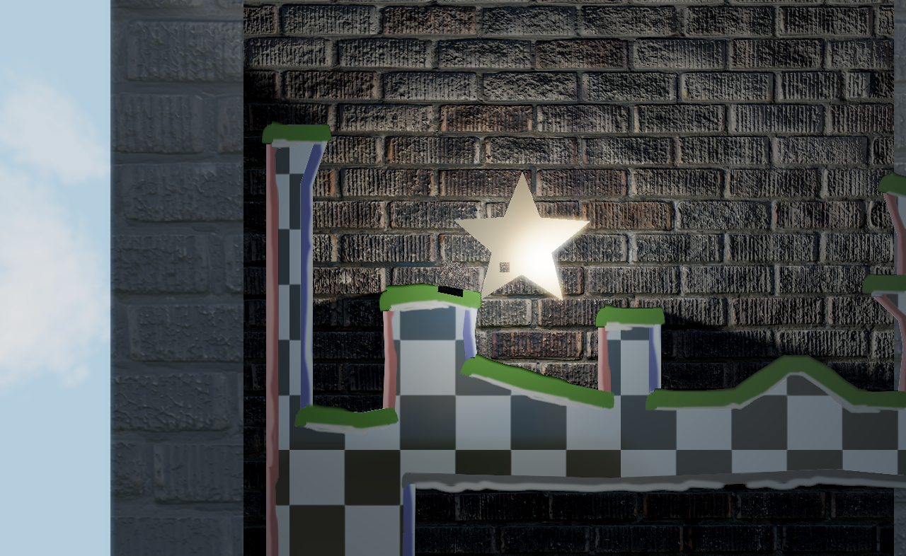

Zum Spiel
Into the Light ist ein Puzzle-Plattformer, bei dem der Spieler sich in einen Lichtstrahl verwandeln kann um Rätsel zu lösen und möglichst schnell das Ende des Levels zu erreichen.
Dabei gilt es geschickt Fallen und Gegnern auszuweichen sowie geziehlt an den richtigen Stellen ins Gras zu beißen, da Stellen an denen man bereits einmal gestorben ist Licht reflektieren und somit genutzt werden können um ein Level noch schneller abzuschließen.
Weitere Informationen befinden sich im aktuellen Design Dokument
